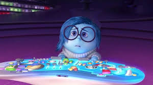

None of the other Emotions really understand what Sadness’s role is. Sadness would love to be more optimistic and helpful in keeping Riley happy, but she finds it so hard to be positive. Sometimes it seems like the best thing to do is just lie on the floor and have a good cry.

Like the other emotions, she trusts Joy to know what's right for Riley. She finds herself unhelpful in comparison, and is desperate that she can't get herself to see things from the same angle as Joy. She is insecure, and lives with the idea that her actions are bad and that she may be harmful for Riley.